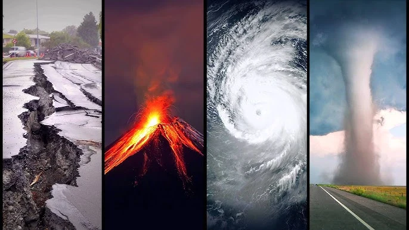
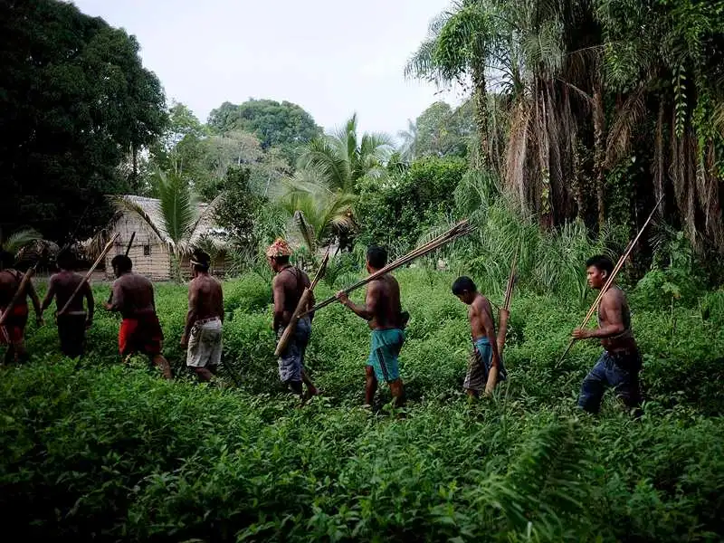
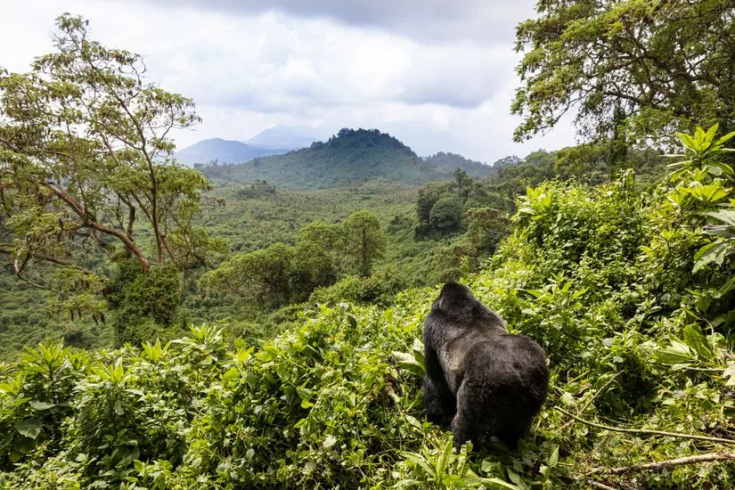

Forests have a significant role in reducing the risk of natural disasters, including floods, droughts, landslides and other extreme events.
Investing in forests and forestry represent an investment in people and their livelihoods
Forests are the most biologically-diverse ecosystems on land, home to more than 80% of the terrestrial species of animals, plants and insects
Source: https://sdgs.un.org/topics/forests